काग़ज़ · paper
From choosing a combination to exporting a deployable site — everything you need to know, in order.
When you open Kagaz, you land on the Choose screen — a grid of 57 curated combinations. Each combination locks three things at once: a layout, a colour palette, and a typography pairing. Pick one to start; you can change any of them later.
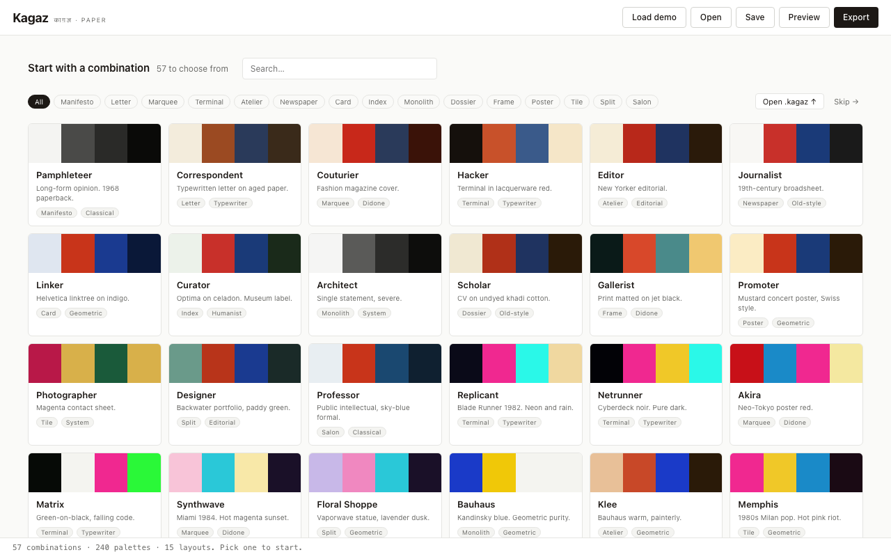
Each card shows a four-colour swatch (body, brand, action, ink), a name and flavour line, and pills for the layout and typography.
The search box matches against combination names and descriptions. The layout filter pills below it narrow the grid to combinations that use a specific layout.
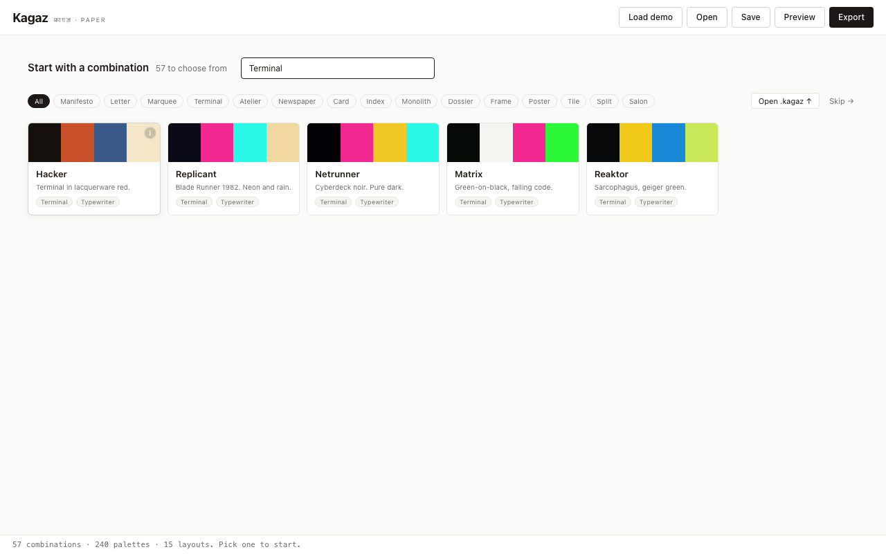
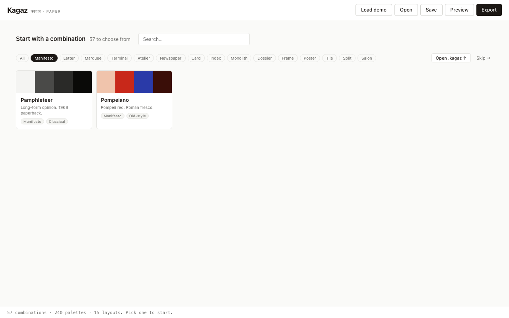
Hover any card and an i button appears in the top corner of the swatch. Click it to read the layout's story — who it's for, what it signals, which palettes pair best with it.
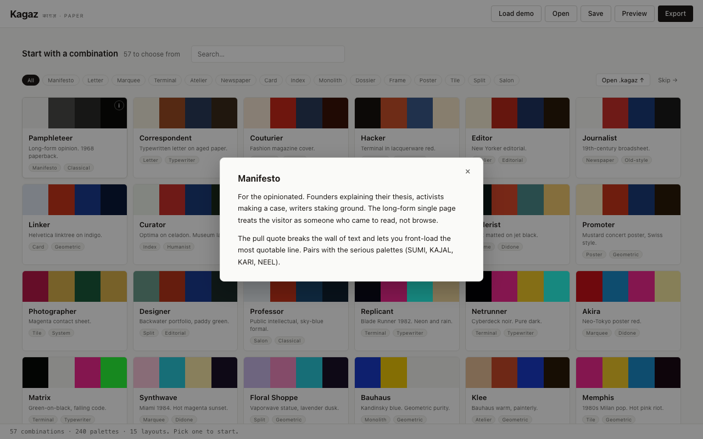
Press Escape or click the backdrop to close.
Click any card to start a new project with that combination. All content slots start empty — the combination sets the visual language, you supply the words.
Already know what you want? Click Skip → in the top-right corner to jump straight into the editor with the Architect default (Monolith layout, Sumi palette, System typography) — a clean, severe single-statement page that works for almost any announcement.
Opening an existing project? Click Open .kagaz ↑ to load a previously saved file, or use the Open button in the topbar at any time.
The editor is a two-column layout: the content form on the left, the live preview on the right. Every change in the form updates the preview immediately.
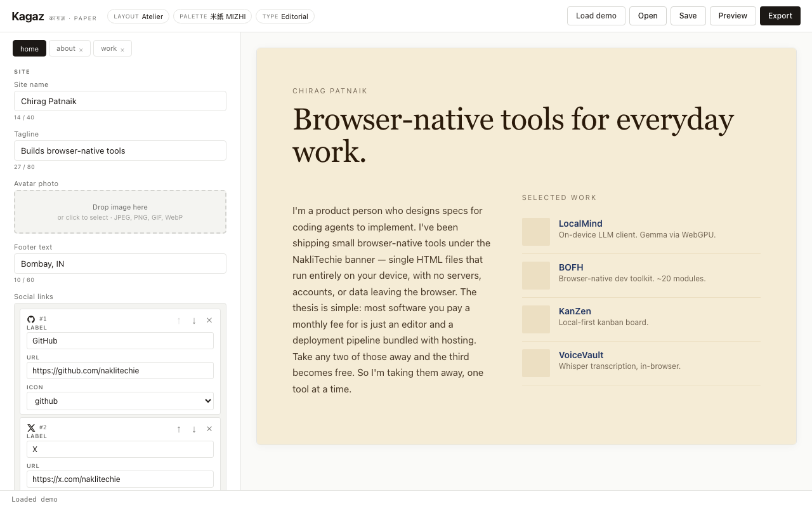
The topbar shows the active combination as three clickable pills — Layout, Palette, Type — and the action buttons: Load demo, Open, Save, Preview, Export.
The form is split into two sections: Site (identity fields that appear on every page) and Page (fields for the currently-active page).
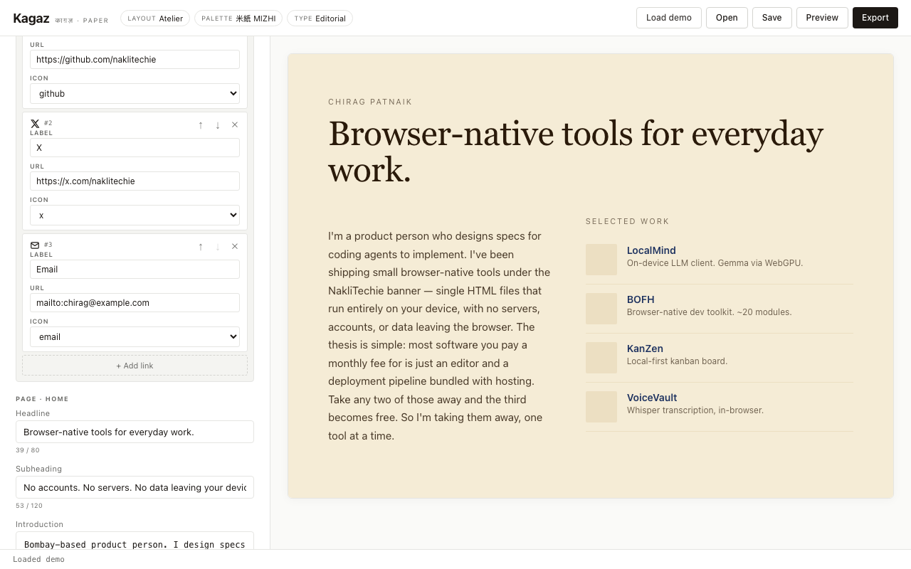
Field types:
**bold**, *italic*, [links](url), - lists.Layouts that support multiple pages show page tabs across the top of the form. Click a tab to switch; the preview follows.
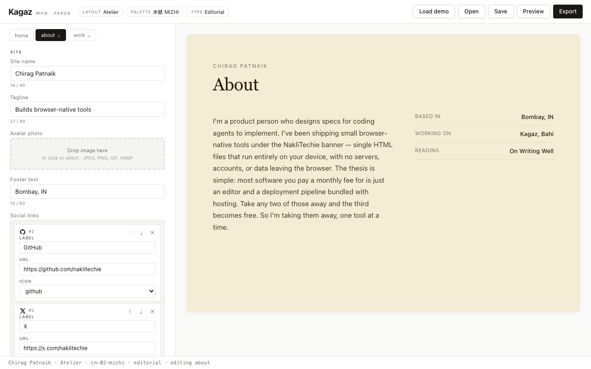
Click » (the add button after the last tab) to add a page from the types the current layout supports. Click the × on a tab to remove that page. Up to 5 pages per project.
Click any of the three pills in the topbar to open the axis picker for that dimension. Switching is always non-destructive — content for pages the new layout doesn't support is kept in memory.
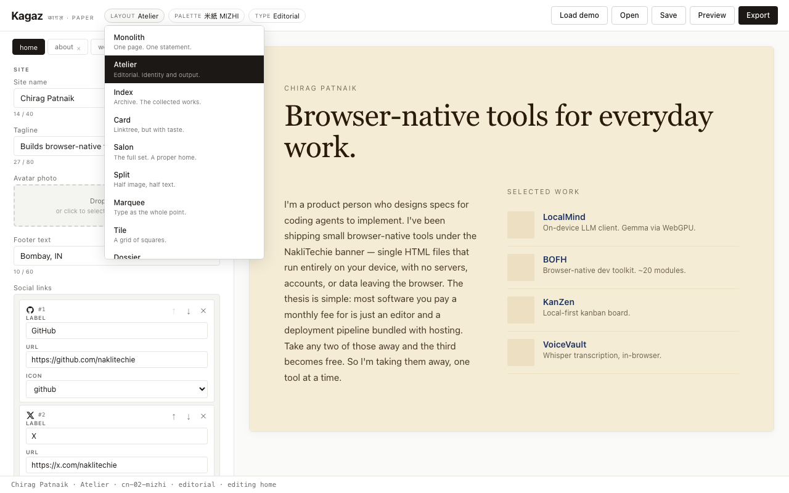
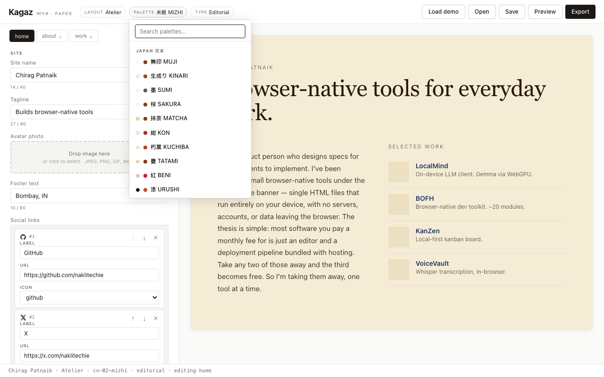
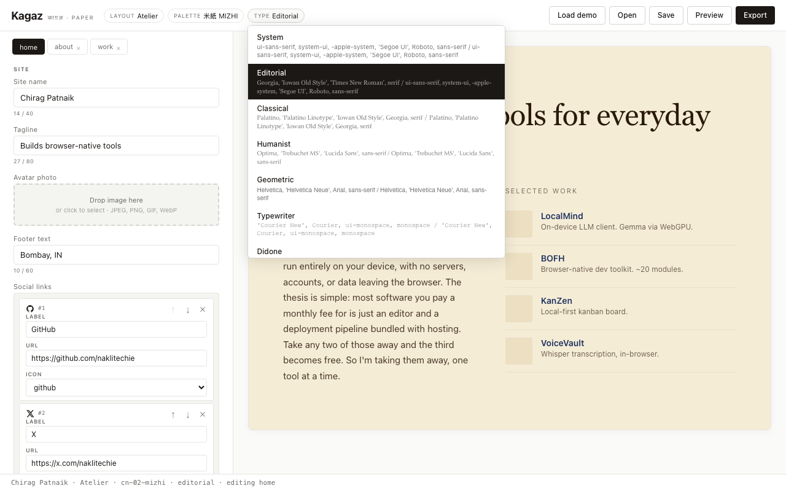
The preview updates live as you browse. Press Escape or click outside to close a picker without committing.
Autosave: Kagaz saves your text content to localStorage every 30 seconds (images excluded). If you close the tab and reopen Kagaz, a toast will offer to restore your last session.
Save as .kagaz: Click Save to download a .kagaz file — a zip of project.json plus any images you added. This is your editable source; keep it somewhere safe.
The .kagaz format is open: it's a zip you can unzip by hand, version-control, or sync however you like.
Click Preview to open a new tab showing the exported site — no editor chrome, real layout. Use it to proofread before you export.
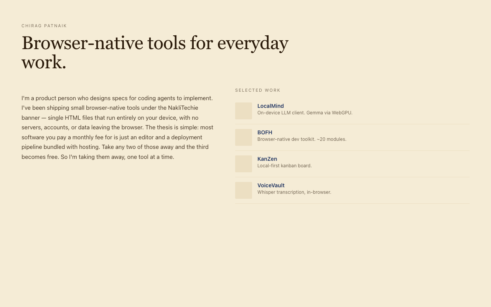
Click Export to download a zip of the full deployable site:
your-site-name.zip
├── index.html (+ about.html, work.html … for multi-page layouts)
├── assets/ (only the images you actually used)
├── favicon.png (auto-generated from your avatar, if set)
└── source.kagaz (your editable source, embedded alongside)The HTML files are pure static — no JavaScript, no tracking, no third-party requests. Drag the unzipped folder into:
gh-pages branchThe source.kagaz inside the zip is a copy of your editable project. If you lose your local file, download your own deployed site, unzip it, and use source.kagaz to re-edit.